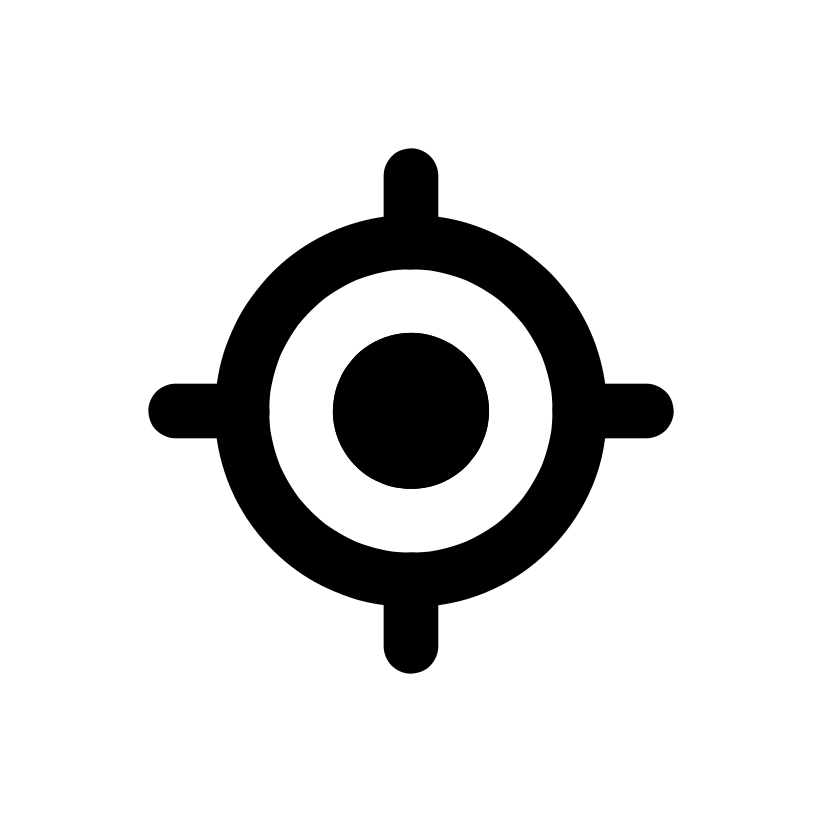

<google-map [options]="mapOptions"
            [center]="centerPosition ? (centerPosition$ | async) : defaultMapCenter"
            [mapTypeId]="mapTypeId"
            [zoom]="centerPosition ? mapZoom : defaultMapZoom"
            height="100%" width="100%"
            (mapInitialized)="mapInitialized($event)"
>

  <ng-container *ngIf="myLivePosition">
    <map-marker [position]="(myLivePosition$ | async)"></map-marker>
  </ng-container>

  <ng-container *ngIf="vertices$ | async as vrc">
    <map-polyline [path]="vrc" [options]="polyLineOptions"></map-polyline>
  </ng-container>
</google-map>

<div class="map-overlay">
  <ion-button (click)="changeParameters()" class="gps-config-button left" *ngIf="isDebugBuild && showChangeMapParamsControl">
    <ion-icon slot="icon-only" name="cog-outline"></ion-icon>
  </ion-button>

  <mat-card appearance="outlined" class="card-gps right" *ngIf="showGpsStrengthControl">
    <mat-card-content class="gps-indicator right" [class]="gpsStrength$ | async">
      <div class="signal-bars mt1">
        <div class="bar gps-none"></div>
        <div class="bar"
             [ngClass]="{'gps-week': (gpsStrength$ | async) === 'gps-weak' || (gpsStrength$ | async) === 'gps-average' || (gpsStrength$ | async) === 'gps-strong'}"></div>
        <div class="bar"
             [ngClass]="{'gps-average': (gpsStrength$ | async) === 'gps-average' || (gpsStrength$ | async) === 'gps-strong'}"></div>
        <div class="bar" [ngClass]="{'gps-strong': (gpsStrength$ | async) === 'gps-strong'}"></div>
      </div>
    </mat-card-content>
  </mat-card>

  <div id="Reset" class="reset-button right" *ngIf="showRestButton">
    
  </div>
</div>
